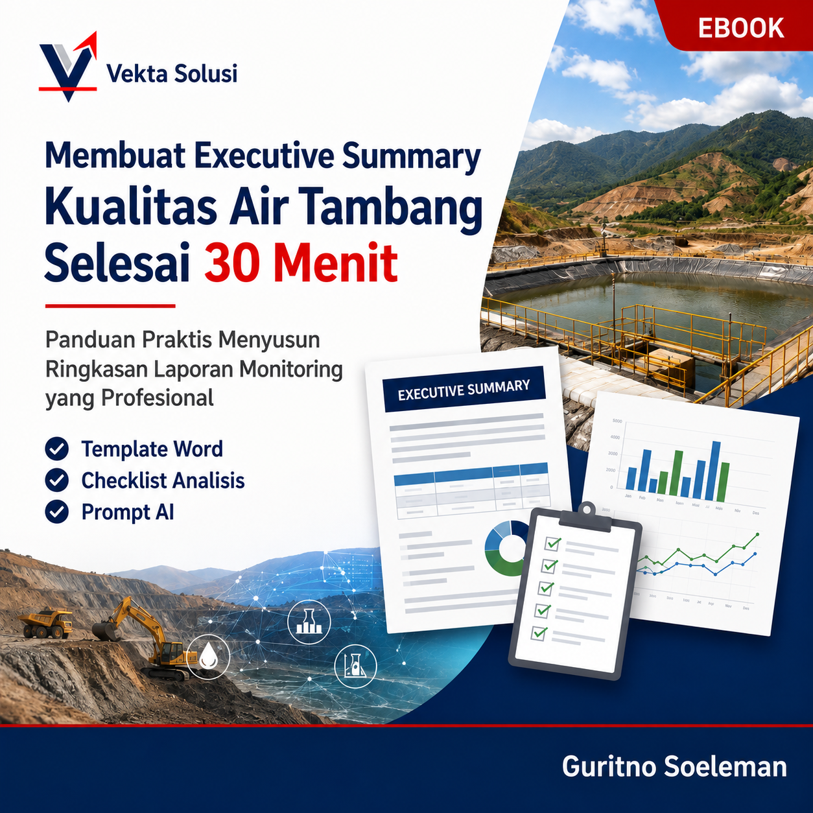

Panduan praktis menyusun ringkasan laporan monitoring kualitas air tambang yang profesional, mudah dipahami, dan siap digunakan.
Dapatkan Ebook Sekarang
Menghabiskan waktu berjam-jam hanya untuk merangkum hasil monitoring.
Sulit membuat laporan yang terlihat profesional dan mudah dipahami manajemen.
Data laboratorium banyak, tetapi sulit menentukan poin penting yang harus ditampilkan.
Ebook ini membantu Anda memahami cara memilih informasi penting, menyusun struktur executive summary, dan menghasilkan laporan yang lebih efektif tanpa mulai dari nol.
Langkah praktis membuat executive summary kualitas air tambang.
Template siap edit untuk mempercepat pekerjaan Anda.
Memastikan poin penting laporan tidak terlewat.
Gunakan AI untuk membantu proses penyusunan laporan.
Panduan praktis menyusun ringkasan laporan monitoring yang profesional, lengkap dengan template dan tools pendukung.
Hemat Rp 73.000 untuk pembeli awal
Harga Rp 126.000 hanya berlaku untuk 50 pembeli pertama. Setelah kuota terpenuhi, harga kembali menjadi Rp 199.000.
Ebook ini cocok untuk engineer, environmental staff, supervisor, consultant, dan profesional yang terlibat dalam penyusunan laporan monitoring kualitas air tambang.
Tidak. Materi dibuat dengan pendekatan praktis sehingga dapat digunakan oleh pemula maupun profesional yang ingin meningkatkan kualitas laporan.
Ya. Anda mendapatkan template Word yang dapat disesuaikan dengan kebutuhan laporan perusahaan Anda.
Setelah pembayaran berhasil, Anda akan mendapatkan akses untuk mengunduh ebook dan seluruh bonus yang tersedia.
Ebook ini berfokus pada cara menyusun executive summary dari hasil monitoring kualitas air tambang agar lebih mudah dipahami oleh manajemen dan stakeholder.